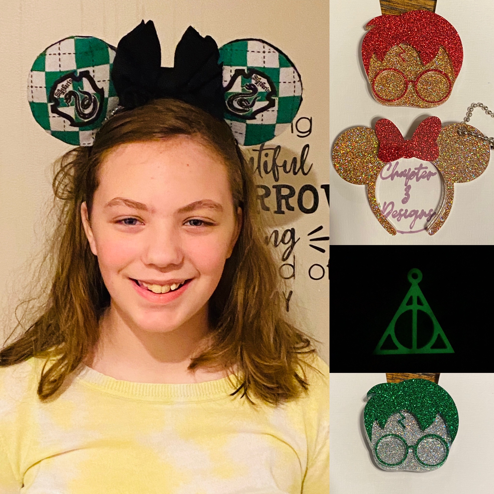
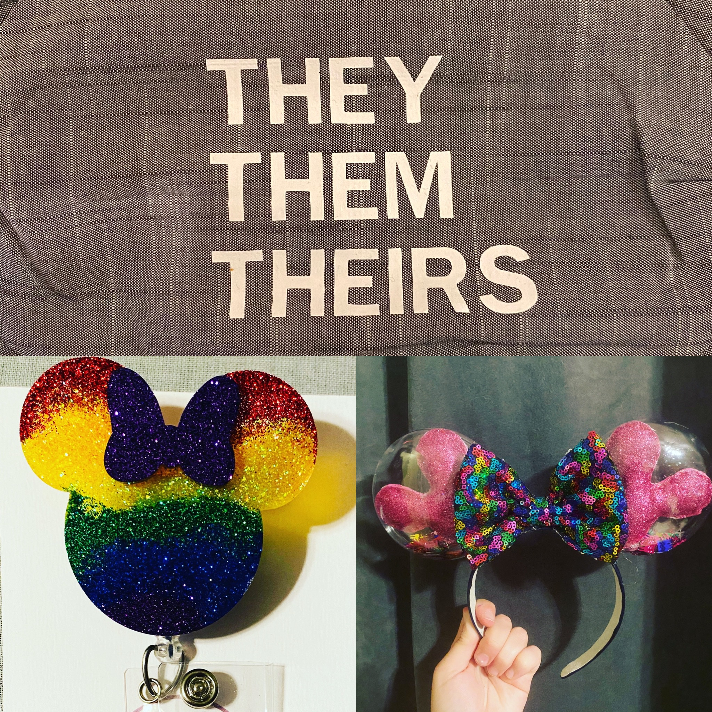

I have always loved crafting, but never found myself to be a creative person. My mom would create these beautiful projects all day long and I always wished I had that much skill.
It really took a push from my husband assuring me that I was in fact creative and could create some awesome projects if I would just believe in myself. He was the one one to come up with the
name Chapter 3 Designs. As avid Disney fans, we have a shared love for Beauty and the Beast. In the first song, Belle sings about a book that she is reading. "Here's where she meets Prince Charming, but she won't discover that it's him till chapter 3".
And from that line, the company got it's name. I opened my Etsy store back in 2012 and at that time
it only had a couple perler bead items and tutus I had made listed. I didnt sell anything until this year. With a push from my friend, we both jumped head first into epoxy keychains and straw toppers. Any time we
wanted to learn a new project, we sit down and figure it out together. Honestly for the most part, we are pretty successful. Now my Etsy store holds almost 50 items ranging from baby onesies to snowglobe plastic tumblers filled
with shaped glitter.

My Harry Potter Inspired Crafts
My Top Selling Items
- *Game name hidden for legal reasons* Adult Drinking Game (Can no longer be ordered on Etsy, only via private message)
- Mickey Mouse Head Badge Reel
- Poison Apple Keychain

Facemask and Disney Crafts
How To Get Started Making Your Own Crafts.
The best advice I can give is just go for it. Crafting can be an expensive hobby so I wouldn't jump head first into any new hobby without plenty
of research. Also, don't fall in the trap of needing the biggest and best. When we started with epoxy, I bought a sample size of the epoxy I use,
the cheapest multi-color pack on Amazon, and knock-off molds from China. This was more than enough for me to be able to practice this new skill
without going too far in the red.
When I am looking for inspiration, I always check Pintrest. It seems like this site died down after the excitement of everyone creating their dream
wedding boards when the site was at the height of it's popularity. I promise, there is still so much I pull from Pintrest. It is a great resource to
find new ideas to try and replicate while learning something new.